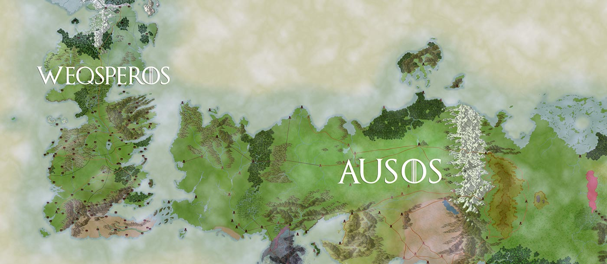
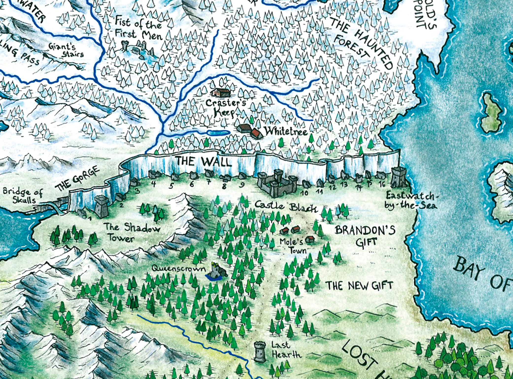

Poniente es el más occidental de los cuatro continentes del mundo conocido.
La mayor parte de Poniente se compone de los Siete Reinos. Hay una gran extensión de tierra al norte sin cartografiar, debido a las temperaturas extremadamente bajas y los habitantes hostiles conocidos como salvajes. Las tierras del norte de Poniente y más allá del Muro están menos habitadas que las del sur a pesar de que su extensión es aproximadamente la misma.

Tierras salvajes
Las llamadas tierras que se encuentran más allá del Muro son básicamente salvajes y desconocidas. El clima es duro y amargo, sobre todo en el extremo norte de las Tierras del Eterno Invierno. Las tierras más allá del Muro son frías todo el año y es sorprendente el número de salvajes que residen en el territorio. Éstos se agrupan en pequeñas aldeas y se congregan en tribus.
En sus paisajes se pueden presenciar una gran cantidad de montañas, ríos congelados y bosques tupidos, donde suelen cazar los llamados salvajes (o pueblo libre), y donde habitan diversos animales,entre ellos los lobos. En las montañas heladas que se pueden presenciar Más Allá del Muro, se encuentran los gatosombras, los cuales suelen cazar alrededor de las montañas, y muy rara vez en los bosques que se encuentran en los valles.

Los Siete Reinos
Poniente estaba dividido en un principio en varios reinos independientes hasta su unificación durante la Conquista por los Targaryen. Después de esta guerra, las diferentes regiones se unieron bajo el mando de la Casa Targaryen en lo que se conoce como los Siete Reinos.
El Norte
Las Islas del Hierro y Tierra de los Rios
El Valle de Arryn
Las Tierras del Oeste
El Dominio
Las Tierras de la Tormenta
Dorne